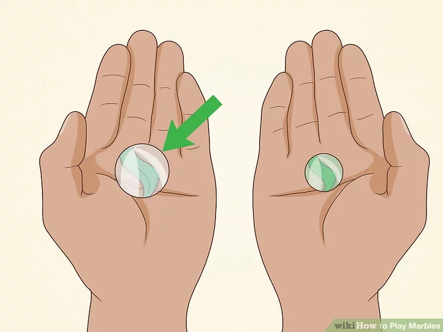
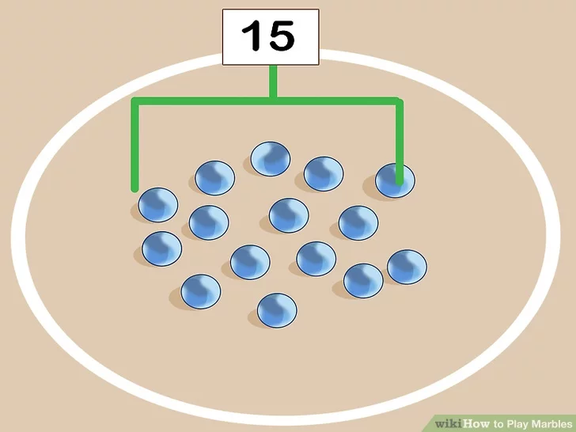
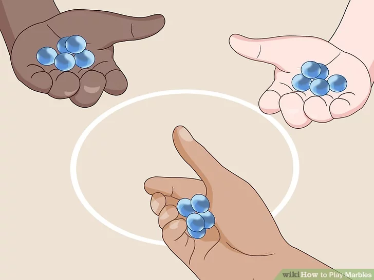
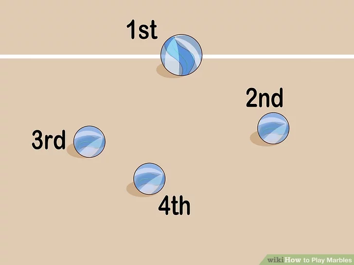
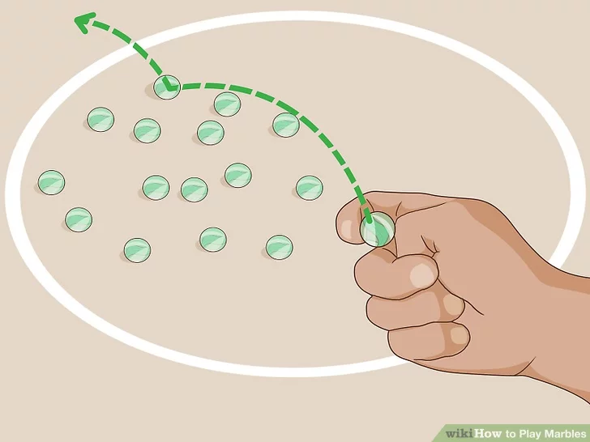
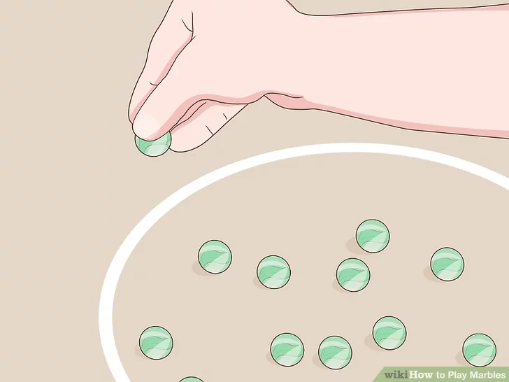
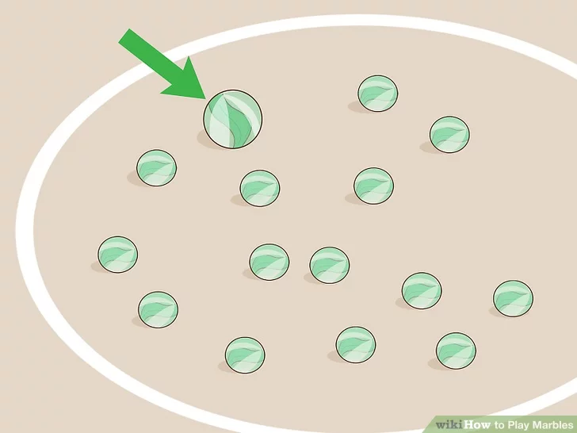
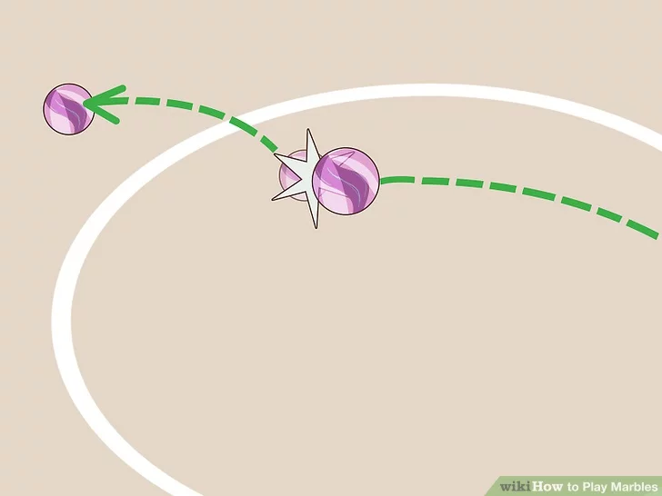
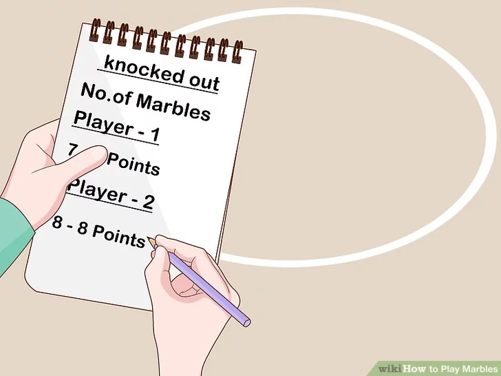

Nothing's more fun than a game of marbles with friends. You can join in on this classic pastime as long as you have a friend, some chalk, and plenty of marbles to compete with. You can play a traditional game of marbles or try out a less-familiar variant, like Bulls Eye or Cherry Pit. No matter what you choose, you're guaranteed a fun game that has been enjoyed for thousands of years.
Download Instructions
For Saving Instructions Offline Click The Button Below
A traditional chalk circle should be around 3 feet (0.9 meters) across. This will be your marble ring during the game. Draw the circle as evenly as you can to ensure a fair game.
Use string as an alternative if you are playing marbles indoors.
2. Choose a shooter marble.
Your shooter (or "taw") marble will be what you use to knock other marbles out of the circle later. Choose a marble bigger than all your other marbles so it has plenty of power. Qualities of a good shooter marble also include a heavier weight and balanced symmetry.
Other names for the shooter marble include Aggie, boulder, Steele, king, and middleman.
Use a big marble as your shooter so it is easier to knock the marbles out.
3. Place ten to fifteen marbles in the center of the ring.

Space the marbles so that they evenly fill the ring, but try to place the majority nearer to the center. How many marbles you choose depends on how large of a game you want. The more you place, the longer the game will last.
4. Decide whether you want to play for keeps.

Marbles can be played either "for fair," which means that every player keeps their marbles or "for keeps." If you choose to play for keeps, marbles can be won by other players by knocking them out of the ring. Choose how you're playing in advance so you know what to expect while playing.
Never let another person trick you into playing for keeps if you are a beginner.
5.
Determine who will go first.

Draw a line in the ground with your chalk, then stand about 10 feet (3.04 meters) away from your line. Have each player take turns flicking their shooter at the line. The player whose marble lands closest to the line goes first (with second, third, fourth, etc., going as follows).
This method of determining the playing order is called lagging.
Alternatively, you can decide with a coin flip or by playing Rock, Paper,Scissors.
6. Kneel outside of the ring and shoot your taw marble from the ground.

Your objective is to knock marbles out of the ring. To shoot your marble correctly, fold your thumb, pinkie, and ring finger into your palm. Roll your pointer finger around the marble, holding it against your thumb knuckle. When you're ready to shoot, flick your thumb out.
Use your dominant hand to shoot the marble.
Some variations of the game give a penalty (like losing a turn) if you touch the chalk circle with your knees while shooting. Decide with your friends whether you want to play with this penalty.
7. Grab any marbles you knocked out.

Don't wait until the end of the game to gather your marbles, as you might not remember which ones your shooter got out. Pick them up right after your turn and gather them in a neat pile.
Some variations of the game state that if you got a marble out, it is still your turn. Ask the other players whether they want to follow this rule.
8. Leave your shooter marble in the ring if you don't knock out any marbles.

You will shoot from within the ring during your next turn (using the same shooting method as before). If your marble is moved within the ring by another player, you will play from wherever it lands.
Decide with your friends whether you want to add a penalty for those who move their shooter marble by accident while it's in the ring.
9. Knock the other player's shooter marble out for a quick win.

If your opponent's shooter marble is within the ring, it's vulnerable to being knocked out. Players whose shooter marbles are knocked out automatically lose the game. If this person was the only other player besides yourself, you win the game by default.
Because shooter marbles are bigger and heavier, they are generally harder to knock out than other marbles.
10. Continue knocking out marbles until none are left in the ring.

Unless your game ends abruptly by knocking other shooters out, this is the only way to end the game. Most marble games last from between fifteen and thirty minutes.
11. Count up how many marbles you knocked out.

Each marble usually equals one point. If you're playing with marbles of different colors or sizes, you may want to assign points to each marble type depending on difficulty. When you've finished counting your marbles, write the number down or keep it safe in your memory.